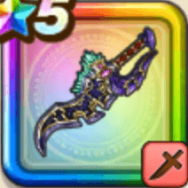

闇竜のキバ
攻略班 8.0点 / メタルピアッサー畏怖の威風天地崩壊黒くかがやく翼闇竜の咆哮尽きぬ執念
くわしい特徴
【レベル別習得スキル】 Lv1【ニンジャ】攻撃力+5 Lv10メタルピアッサー（消費MP：28）敵1体に威力170%の斬撃ダメージを3回与え、メタル系なら+15ダメージを3回与える Lv15畏怖の威風（消費MP：28）自身の威圧発動率とブレス攻撃の威力をあげる Lv20天地崩壊（消費MP：35）敵1体にドルマ属性のブレス特大ダメージを与え、たまに衰弱させる Lv30黒くかがやく翼（消費MP：53）敵全体に120%ヒャド属性斬撃ダメージを4回与える。自身の行動順が早いほど会心の一撃が発生しやすい（最大10%） Lv35物質系へのダメージ+5% Lv40怪人系へのダメージ+5% Lv45攻撃力+12 Lv50闇竜の咆哮（消費MP：最大MPの1%）戦闘開始時に最大MPの1%を消費し、まれに敵全体を戦意喪失させ、ニンジャ・海賊装備時、敵全体を戦意喪失させる（効果1ターン） Lv50尽きぬ執念（消費MP：5）「大海の浪漫」「咆哮」の使用による威圧、威圧・強の発動率の低下を無効化する（効果5ターン） 【限界突破スキル】 1凸スキルの斬撃・体技・ブレスダメージ+7% 2凸スキルの斬撃・体技・ブレスダメージ+7% 3凸スキルの斬撃・体技・ブレスダメージ+7% 4凸スキルの斬撃・体技・ブレスダメージ+7%